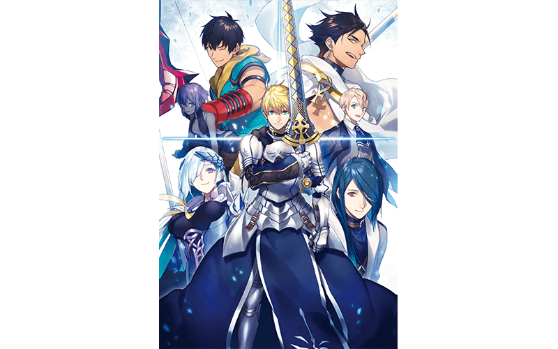
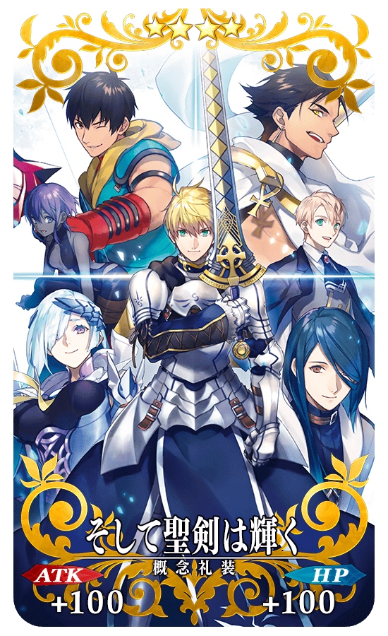
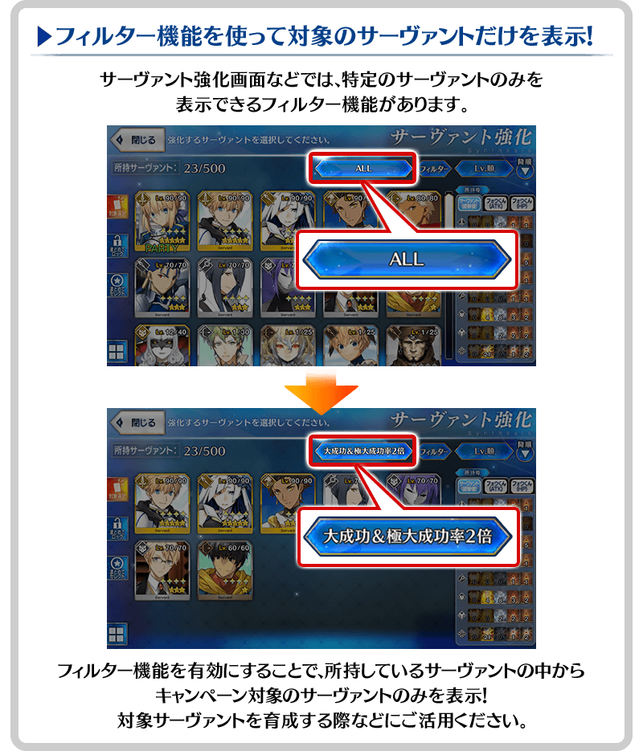
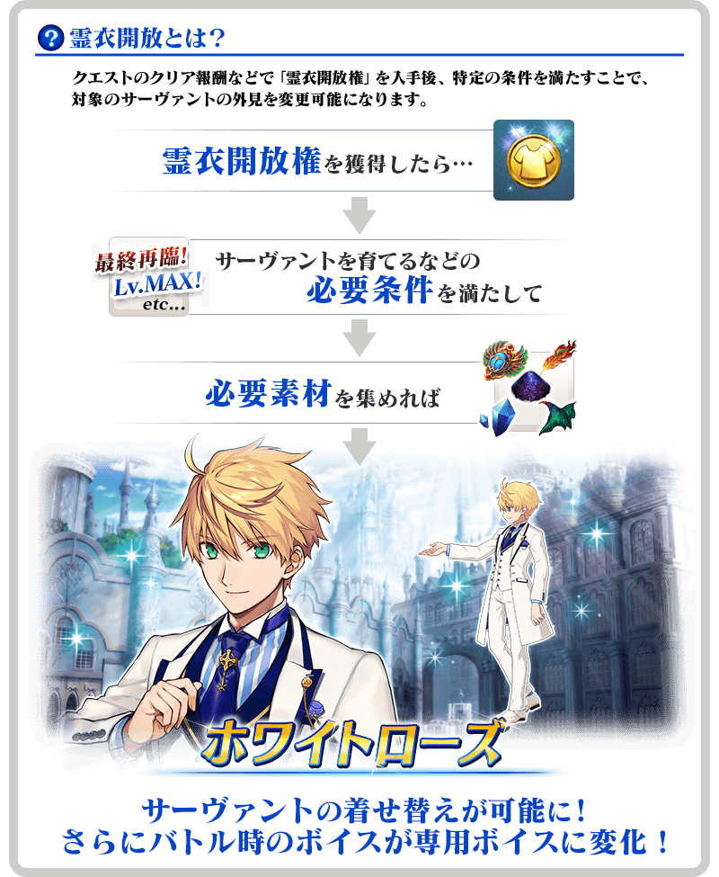

2019年11月20日(三) 17:00～12月4日(三) 11:59的期間，為了記念「Fate/Prototype 蒼銀的碎片」廣播劇CD系列的完結，舉辦『「Fate/Prototype 蒼銀的碎片」廣播劇CD完結記念宣傳活動』！
◆舉辦期間◆
2019年11月20日(三) 17:00～12月4日(三) 11:59
※本頁面皆為開發中圖片。會有與實際圖片相異的情況。


商品名:Fate/Prototype 蒼銀的碎片 Drama CD ＆ Original Soundtrack 5 -そして、聖剣は輝く-
發售日:2019年11月27日(三)
價格:4,800円(未稅)
品號:SVWC-70313～70318
規格:CD6張組(本篇光碟5張・OST1張)、中原繪製封面
【官方網站】
https://fate-pt-sougin.com/
為了記念「Fate/Prototype 蒼銀的碎片」廣播劇CD的完結，實施特別登入獎勵。
在下述期間中，登入3次(1天算1次)的話，贈送最多白銀果實6個與「Fate/Prototype 蒼銀的碎片」廣播劇CD完結記念限定概念禮裝！
◆舉辦期間◆
2019年11月21日(四) 3:00～11月26日(二) 2:59
◆贈送對象◆
2019年11月25日(一) 2:59前通過「特異點F 炎上汙染都市 冬木」的御主對象
※上述時間前，在管理室(ターミナル)畫面的關卡橫幅必須要有「CLEAR」的文字顯示。
| 登入次數 | 贈送內容 | |
|---|---|---|
| 第1次 |

|
白銀果實 1個 |
| 第2次 |
|
白銀果實 2個 |
| 第3次 | ★4(SR)そして聖剣は輝く 1張 | |
|
|
白銀果實 3個 | |
※登入獎勵會在每天3:00配發。 ※最多能領取3次，但根據成為贈送對象的時間點，可能無法到此上限。
◆「Fate/Prototype 蒼銀的碎片」廣播劇CD完結記念限定概念禮裝◆
|  |
★★★★SR |
下述的期間中，在進行廣播劇CD「Fate/Prototype 蒼銀的碎片」關聯從者的強化時，大成功(經驗值2倍加成)・極大成功(經驗值3倍加成)發生機率以期間限定變成2倍！
務必藉此機會強化對象從者吧！
◆舉辦期間◆
2019年11月27日(三) 12:00～12月4日(三) 11:59
◆對象從者◆
| 職階 | 稀有度 | 從者名 |
|---|---|---|
| Saber | ★★★★★ | 亞瑟・潘德拉剛〔Prototype〕 |
| Archer | ★ | 阿拉什 |
| Lancer | ★★★★★ | 布倫希爾德 |
| Rider | ★★★★★ | 奧茲曼迪亞斯 |
| Caster | ★★★ | 馮・霍恩海姆・帕拉塞爾斯 |
| Assassin | ★★★ | 靜謐的哈桑 |
| ★★★ | 亨利・傑基爾＆海德 |


下述的期間中，在關卡開始時的支援選擇畫面，選擇其他御主的廣播劇CD「Fate/Prototype 蒼銀的碎片」關聯從者做支援情況、其他御主選擇自己的對象從者做支援情況的友情點數獲得量變成2倍。
將好友和跟隨的御主等做為支援能選擇從者和概念禮裝的編成列入考量，藉此機會入手更多友情點數吧！
◆舉辦期間◆
2019年11月20日(三) 17:00～12月4日(三) 11:59
◆對象從者◆
| 職階 | 稀有度 | 從者名 |
|---|---|---|
| Saber | ★★★★★ | 亞瑟・潘德拉剛〔Prototype〕 |
| Archer | ★ | 阿拉什 |
| Lancer | ★★★★★ | 布倫希爾德 |
| Rider | ★★★★★ | 奧茲曼迪亞斯 |
| Caster | ★★★ | 馮・霍恩海姆・帕拉塞爾斯 |
| Assassin | ★★★ | 靜謐的哈桑 |
| ★★★ | 亨利・傑基爾＆海德 |
※請注意NPC從者即使是對象從者也在友情點數獲得量2倍的對象外。
在2018年舉辦的「迦勒底男孩收藏2018」登場的「★5(SSR)亞瑟・潘德拉剛〔Prototype〕」靈衣開放權在達文西工房的「稀有稜鏡交換」追加！
可用稀有稜鏡5個交換上述靈衣開放權。
另外，想要靈衣開放的話，除了靈衣開放權外必須再加上一些開放條件。
◆追加時間◆
2019年11月20日(三) 17:00～
※在「稀有稜鏡交換」追加的靈衣「純白薔薇」開放權為常駐，沒有交換期限。 ※關於已經獲得交換對象靈衣開放權的玩家，無法交換。
◆有關靈衣開放權的注意◆
※請注意未持有「★5(SSR)亞瑟・潘德拉剛〔Prototype〕」的情況，可入手靈衣開放權。但無法進行靈衣開放。
◆追加道具(常駐)◆
靈衣「純白薔薇(ホワイトローズ)」開放權
| 追加道具 | 能交換次數 | 1次交換所需 稀有稜鏡數 |
|---|---|---|
| 靈衣「純白薔薇」開放權 | 1回 | 5個 |

※「靈衣開放」後會自動切換戰鬥角色和圖示。若想回到「靈衣開放」前的狀態和變成其他再臨階段的情況，可自從者詳細畫面變更。 ※透過「靈衣開放」只變更從者的外觀和語音，職階和數值沒有變化。 ※請注意一部份的語音沒有變化。

「靈衣開放」是自強化畫面進行。
其他還有，期間限定『「Fate/Prototype 蒼銀的碎片」廣播劇CD完結記念Pick Up召喚(每日交替)』同時舉辦！
關於詳情，請自下述橫幅確認。
■「Fate/Prototype 蒼銀的碎片」廣播劇CD完結記念Pick Up召喚(每日交替)詳細情報